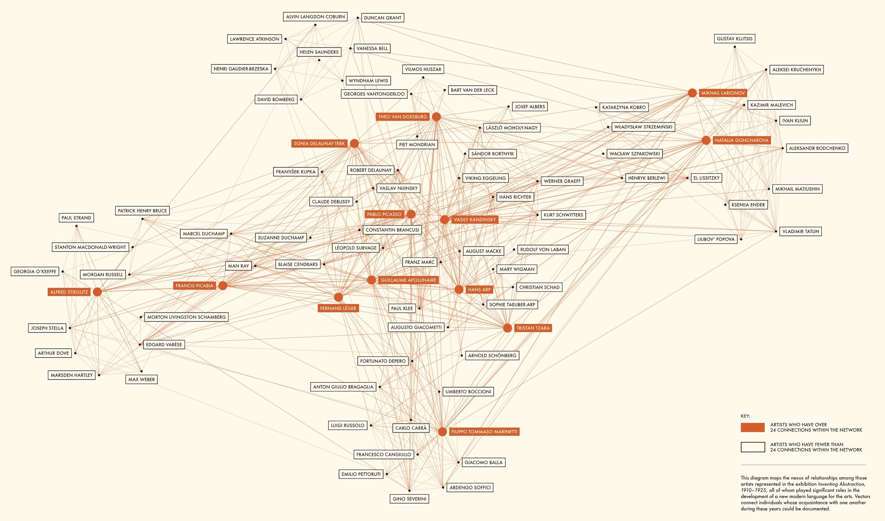

The Inventions of European Abstraction
-

Vasily Kandinsky - Painting with White Border - 1913
-

Kazimir Malevich - Dynamic Suprematism - 1915-6
-

Piet Mondrian - Composition - 1916
-

František Kupka - Amorpha - Fugue in Two Colors - 1912
Ok, abstraction wasn't really "invented" as much as it's the product of numerous intersecting artists, working in the Western context of modern painting, who began making art that could be identified as deliberate instances of abstraction.
Among them:
-
The French Orphists Robert Delaunay and Sonia Terk
-
Fernand Leger, also in France
-
Piet Mondrian in the Netherlands
-
In Russia:
-
Wassily Kandinsky
-
Kazimir Malevic
-
The Rayonists Mikhail Larionov and Natalia Goncharova
-
František Kupka in the Czech Republic
-
The English Vorticist Wyndham Lewis
-
The Italian Futurists Giacomo Balla and Gino Severini
-
Paul Klee, Hans Arp, and Sophie Taeuber in Switzerland
-
Americans such as Arthur Dove and the Synchronists Morgan Russell and Stanton Macdonald-Wright.
Adapted from Art Since 1900, 116
An interesting twist?
The recent rediscovery of Hilma af Klint, a Swedish mystic whose fully abstract paintings predate all of the above by a few years.
-

Hilma af Klint - Group IV, Group IV, The ten largest no 3, Youth - 1907
-

Hilma af Klint - Group IV, The ten largest no 7, adulthood - 1907

Alfred H. Barr Jr, cover of Cubism and Abstract Art, 1936
As the first director of the Museum of Modern Art (MoMA), New York, Barr was extremely influential in establishing what would become (arguably) the dominant story of modern art's history.
In 2012 the MoMA "rebooted" Barr's diagram. Whereas Barr presents art history as the linear, chronological development of discrete movements into two outcomes, the Inventing Abstraction diagram prioritizes decentralized, international social networks.

MoMA, Inventing Abstraction: 1910-1925, 2012
These diagrammatic differences (made possible by different technologies for designing them) raise important questions:
-
Does art history have a proper destination or direction?
-
Is abstraction the "goal" of modern art?
-
Is art better for following the path of advancement?
-
Is art history the history of who-knows-whom?
Cubism gets pretty close to abstraction but never makes the full leap...
Whether from fear of becoming just decorative or of letting go of its semiotic anchors in the real world.
After all, Cubism wasn't about eliminating visual representation but stretching it as far as it would go.
Yve-Alain Bois summarizes the Cubism's influence on abstraction:
Cubism was the first style to perform this paradox of an art that appears both abstract and realist, and it remained the crucible for most abstract artists. Yet "Cubism did not accept the logical consequences of its own discoveries," Mondrian remarked in a retrospect shared by others, "it was not developing towards its own goals, the expression of pure plastics." Thus in 1912-13 some artists pushed the "analytical" aspect of Cubism to dissolve the motif altogether. They did so either in linear coordination with the implicit grid of the canvas, as with Mondrian... or through prismatic effects of color seen as light, as with Delaunay... If Mondrian explicated the grid in a way that exceeded the faceted planes of Cubism, Delaunay intensified color in a manner that was alien to its muted palette. Meanwhile, other artists pushed the "synthetic" aspect of Cubism: the flat shapes of Cubist collage were the immediate precedent for the abstract color planes of Malevich, while the factual elements of Cubist construction, which Picasso showed Vladimir Tatlin in Paris in the spring of 1914, were one provocation of his Constructivist "analysis of materials." Some kind of passage through Cubism became almost a prerequisite for followers: "From a [Cubist] analysis of the volume and space of objects to the [Constructivist] organization of elements," the Russian Liubov Popova (1889-1924) wrote in a 1922 studio note, as if this development were already a catechism.
moreover...
Even as abstraction moved away from a mimetic relation to the world it did not necessarily embrace the "arbitrary" nature of the sign as explored in Cubist collage and construction. Abstract artists might have declined to depict worldly things, but they often aspired to evoke transcendental concepts-such as "spirit," or "purity"-and in this way they replaced one type of grounding, one form of authority, with another.
Look familiar?

Piet Mondrian - Composition no. 3 - 1913

Fernand Leger - Contrast of Forms - 1913
Orphism
A name* appropriated from Symbolist theorists by Guillaume Apollinaire, and used to designate the work of Robert Delaunay, Marcel Duchamp, Fernand Léger, Francis Picabia and (to an extent) Pablo Picasso that revealed a tendency towards colour abstraction. Though hardly any of the artists accepted the label, Apollinaire argued that they shared a common interest in 'pure' painting, which would give a 'pure aesthetic pleasure'
Neil Cox, Cubism, 427
*Orphism references the Greek myth of Orpheus, whose art was deeply powerful on an affective level.
-

Robert Delaunay - Eiffel Tower - 1909
-
-

Robert Delaunay - Eiffel Tower - 1911
-
-

Robert Delaunay - Simultaneous Windows on the City - 1912
-
-
 - 1912.jpeg)
Robert Delaunay - Simultaneous Windows (2nd Motif, 1st Part) - 1912
-
-

Robert Delaunay - Window on the City no. 3 - 1911-12

Robert Delaunay - Sun and Moon 1913
Sonia Delaunay-Terk - Prose of the Trans-Siberian and of Little Joan of France - 1913 (scroll)
So what were Picasso and Braque up to?
The rise of abstract painting dovetailed with a return to figuration, whether by dialing down Cubism's visual ambiguity, instead emphasizing recognizable figures and themes, to a return to Classical style.
-

Pablo Picasso - Portrait of Max Jacob - 1915
-

Pablo Picasso - Olga in an Armchair - 1917-18
-

Georges Braque - Woman Carrying a Basket of Fruit - 1920
-

Georges Braque - Bather - 1925
Some context
The lead-up to World War I saw a dramatic rise in nationalism among Europe's big powers that coincided with a reactionary turn toward the "traditional" - nostalgic fantasies about of pre-lapsarian Classicism, often tinged with an air of racial purity 🤮
Cubism was already vilified in the popular press as being un-French, even too German. Meanwhile, the (actually) German gallerists and dealers who were instrumental in supporting Cubism's advancement (Daniel Henry-Kahnwiler, Ambroise Vollard, and Wilhelm Uhde) were deported and disenfranchised.
Things didn't get better after the war: the death of many leading art figures, economic ruin, and the generalized trauma of war did little to nurture artistic experimentation among established artists.
A return to order?
The rappel à l'ordre (return to order) issued a call for a return to the presumed classical roots of French art, in the course of which its proponents opened an attack on Cubism. The beginnings of this return are assigned various dates, a late one being the 1923 essay by Jean Cocteau "Le Rappel a I'Ordre," a much earlier one being Apres le Cubisme, published in 1918 by the painter Amedee Ozenfant and the architect Charles-Edouard Jeanneret (later known as Le Corbusier). But what all these calls to order have in common is the idea that the prewar period was defined by chaos, by a decadent sensuality that needed to be replaced by the purity of classical rationalism, and by the barbarization of French culture by German influences. In fact, Ozenfant and Jeanneret called on artists to focus on the golden section and other ideas of classical proportion, making it possible for there to be a "new Pythagoras." "Science and great Art have the common ideal of generalizing," they wrote. Arguing that if "The Greeks triumphed over the Barbarians" it was because they sought intellectual beauty beneath sensory beauty. Two versions of this classicism are represented by these two tracts, however. The first, Purism, has a modem, streamlined look, and speaks the language of science and of general laws, such as proportion. It argues that the artist-designer should dedicate himself to industry, producing for it the generalized types associated with classical forms. The second has a reactionary, Old Master character and recycles the themes and genres of the neoclassical art it wishes to revive. The mother-and-child theme became a preferred one-taken up by former Cubists such as Gino Severini as well as modified ones such as Albert Gleizes-as did the tradition of the commedia del'arte. Severini's clowns and harlequins, painted in the early twenties in the hard outlines and licked surfaces of the most academicized classicism, are determined examples of the latter.
Art Since 1900, 171
Purism
Neoclassicism
Now understood to describe the classicizing style which evolved in European art of the later 18th and early 19th centuries in reaction to the florid sensuality of the Rococo. It embraced the fine and decorative arts and architecture, and its masters included the painter David (The Oath of the Horatii, Louvre, Paris), the sculptor Canova, and the architects Ledoux and Soane. The term was actually devised later, in the 1880s, and was originally pejorative, denoting 'pseudo-classical', and particularly directed at Jacques-Louis David and his school. Neoclassicism is now seen to have achieved a purity of expression, however, and would have been referred to by its practitioners as the 'true' or 'correct' style. It was based on the study of antique art, which was to be imitated but not slavishly copied, and thus embody what were perceived to be the general and permanent principles of the visual arts as formulated by the ancients. Its first great theorist was J. J. Winckelmann (1717–68), whose Reflections on the Painting and Sculpture of the Greeks was published in English translation in 1765.
Clarke, Michael. "Neoclassicism." In The Concise Oxford Dictionary of Art Terms. : Oxford University Press, 2010.
-

Jacques-Louis David - Portrait of Madame Recamier - 1800
-

Jean-Auguste-Dominique Ingres - Portrait of Monsieur Bertin - 1832
-

Attributed to Phidias - Hermes Logios - ca 5th Century BCE